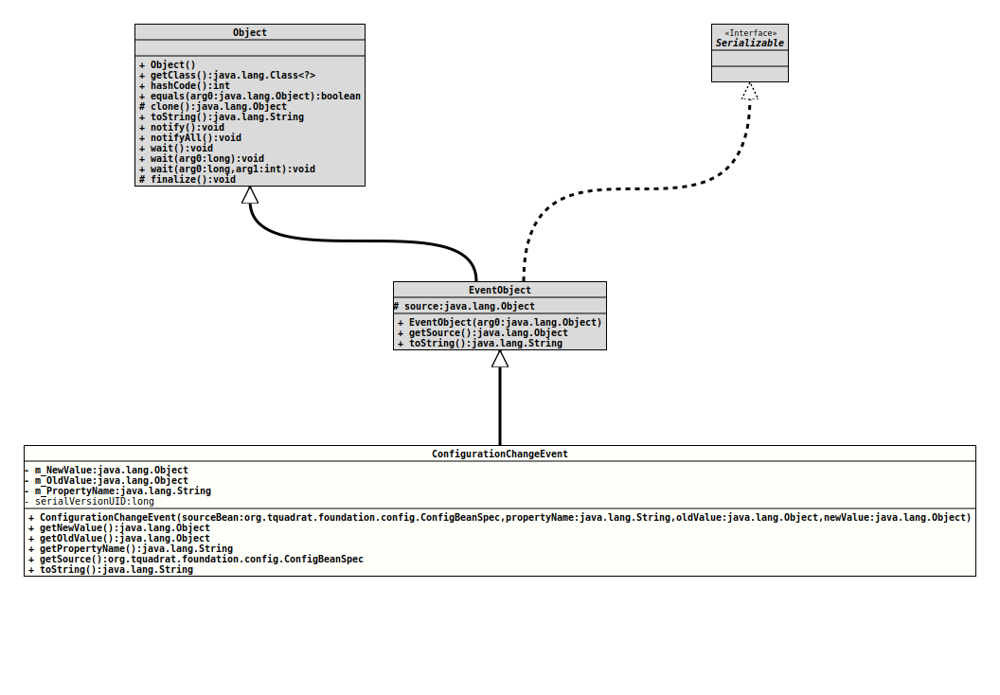

Package org.tquadrat.foundation.config
Class ConfigurationChangeEvent
java.lang.Object
java.util.EventObject
org.tquadrat.foundation.config.ConfigurationChangeEvent
- All Implemented Interfaces:
Serializable
@ClassVersion(sourceVersion="$Id: ConfigurationChangeEvent.java 1061 2023-09-25 16:32:43Z tquadrat $")
@API(status=STABLE,
since="0.0.1")
public final class ConfigurationChangeEvent
extends EventObject
The event object that is thrown each time a property of a configuration
bean is changed.
- Author:
- Thomas Thrien (thomas.thrien@tquadrat.org)
- Version:
- $Id: ConfigurationChangeEvent.java 1061 2023-09-25 16:32:43Z tquadrat $
- Since:
- 0.0.1
- See Also:
- UML Diagram
-

UML Diagram for "org.tquadrat.foundation.config.ConfigurationChangeEvent"
{kind=link}
-
Field Summary
FieldsModifier and TypeFieldDescriptionprivate final ObjectThe new value of the property.private final ObjectThe old value of the property.private final StringThe name of the property.Fields inherited from class java.util.EventObject
source -
Constructor Summary
ConstructorsConstructorDescriptionConfigurationChangeEvent(ConfigBeanSpec sourceBean, String propertyName, Object oldValue, Object newValue) Creates a newConfigurationChangeEventinstance. -
Method Summary
Modifier and TypeMethodDescriptionfinal ObjectGets the new value for the property, expressed as an instance ofObject.final ObjectGets the old value for the property, expressed as an instance ofObject.final StringGets the name of the configuration property that was changed.final ConfigBeanSpecfinal StringtoString()
-
Field Details
-
m_NewValue
The new value of the property. -
m_OldValue
The old value of the property. -
m_PropertyName
The name of the property.
-
-
Constructor Details
-
ConfigurationChangeEvent
public ConfigurationChangeEvent(ConfigBeanSpec sourceBean, String propertyName, Object oldValue, Object newValue) Creates a newConfigurationChangeEventinstance.- Parameters:
sourceBean- The reference to the configuration bean that fired the change event.propertyName- The name of the property that was modified.oldValue- The property's value before the change; obviously, this can benull, depending on the property.newValue- The new value of the property; if allowed by the property, this can benullalso.
-
-
Method Details
-
getNewValue
Gets the new value for the property, expressed as an instance ofObject.- Returns:
- The new value for the property, expressed as an instance of
Object. May benull.
-
getOldValue
Gets the old value for the property, expressed as an instance ofObject.- Returns:
- The old value for the property, expressed as an instance of
Object. May benull.
-
getPropertyName
Gets the name of the configuration property that was changed.- Returns:
- The name of the property that was changed.
-
getSource
- Overrides:
getSourcein classEventObject
-
toString
- Overrides:
toStringin classEventObject
-